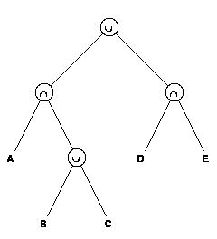
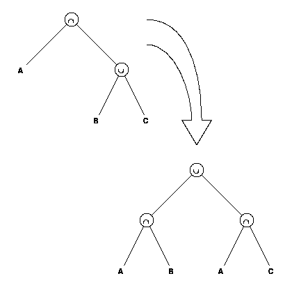
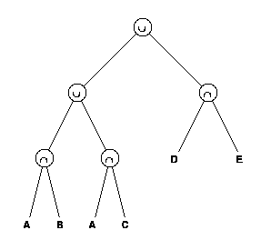

The solid of linear extrusionone of the exceptions noted aboveis not currently a supported primitive in BRL-CAD, so we approximate it by using a combination of other BRL-CAD primitives. In cases where the curve to be extruded is simply a single circular or conic arc, then a BRL-CAD gentgc solid is produced. If the curve to be extruded is anything else, we approximate the curve by a series of straight line segments and a BRL-CAD polysolid is built. The sides are all polygons of four vertices and the top and bottom surfaces are simply additional polygons to close the ends.
The solid of revolution is also implemented by approximating the defining curve as a series of straight line segments. When the approximating curve is revolved, each straight line segment generates a BRL-CAD gentgc solid. This stack of solids is then combined to form the final approximation to the IGES entity. Exactly how these solids are combined depends on the form number of the IGES solid. The form number is another piece of data that is included in the directory section entry for each entity. For a solid of revolution, the form number indicates whether the curve to be revolved is closed upon itself or is closed upon the axis of revolution. If the curve is closed upon the axis of revolution, then the final object is merely the union of all the approximating solids. If the curve is closed upon itself, then the final object must have a hollow section through the center, and the approximation must be built with the appropriate combination of unions and subtractions of the stack of solids.
The solid assembly entity is directly analogous to the BRL-CAD group and is converted directly to that form. The boolean tree entity, however, presented some difficulties. IGES defines the boolean tree in a postorder notation that allows for easy construction of a binary tree in memory through the use of a stack algorithm. An example of a boolean tree is shown in figure 3.
 Figure 3. Boolean Tree Example
The postorder notation that an IGES translator would produce for this tree is
A B C u + D E + u.The equivalent infix notation for this tree is
(A + (B u C)) u (D + E).where "+" represents the intersection operator and "u" represents the union operator. Note that the parentheses are required for correct evaluation of this tree.
Since BRL-CAD does not support postorder notation nor permit parenthetical expressions in region definitions, an IGES boolean tree cannot be directly converted to a BRL-CAD region, in general. Because of its ancestry, BRL-CAD has inherited the property that there are implied parentheses at the union operators, i.e., all the operations between the union operators are performed first, then the unions are evaluated. These facts lead to some restrictions on the form of the boolean trees that may be directly converted to BRL-CAD regions. These restrictions may be summed up by saying that no union operator may appear at a node in the tree below any nonunion operator. In general, any boolean tree may be rewritten to satisfy that requirement by applying a series of transformations to its subtrees. An example of just such a transformation is shown in figure 4.
 Figure 4. Subtree Transformation
Here, a subtree of the previous example illustrates a situation where a union operator appears below an intersection operator. This subtree is easily rewritten (as shown in the figure) to move the union operation up the tree. When this subtree is placed back in the original tree, the result is a tree that conforms to the BRL-CAD syntaxwhile still producing the same resultant object.
 Figure 5. Final Tree Structure
Figure 5 illustrates the final tree structure, which can now be expressed in BRL-CAD syntax as
A + B u A + C u D + EThis region is then constructed in the BRL-CAD model.
A series of transformations was developed to convert from IGES postorder notation to BRL-CAD syntax by examining all possible subtree situations where a union operator appears below a nonunion operator and constructing an equivalent tree with the union operator at the top. The only remaining difficulty is the fact that IGES allows boolean trees to reference other boolean trees. In BRL-CAD, a group may reference another group, but a region referencing another region is generally not supported. Since BRL-CAD groups are only unions of a collection of objects, it appears that after having solved the boolean tree problem, neither the BRL-CAD region nor the BRL-CAD group will satisfy our requirements. However, the regions and groups in BRL-CAD are really just varieties of the same type of object called a combination in BRL-CAD with a flag in the structure indicating that a particular object is a region. BRL-CAD actually supports combinations that reference other combinations as long as the combination isn't flagged as a region. So the resulting boolean trees from IGES may be converted to BRL-CAD combinations.